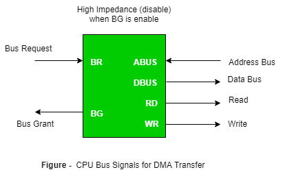

The method that is used to transfer information between internal storage and external I/O devices is known as I/O interface. The CPU is interfaced using special communication links by the peripherals connected to any computer system. These communication links are used to resolve the differences between CPU and peripheral. There exists special hardware components between CPU and peripherals to supervise and synchronize all the input and output transfers that are called interface units.
Mode of Transfer:
The binary information that is received from an external device is usually stored in the memory unit. The information that is transferred from the CPU to the external device is originated from the memory unit. CPU merely processes the information but the source and target is always the memory unit. Data transfer between CPU and the I/O devices may be done in different modes.
Data transfer to and from the peripherals may be done in any of the three possible ways
- Programmed I/O.
- Interrupt- initiated I/O.
- Direct memory access( DMA).
Now let’s discuss each mode one by one.
- Programmed I/O: It is due to the result of the I/O instructions that are written in the computer program. Each data item transfer is initiated by an instruction in the program. Usually the transfer is from a CPU register and memory. In this case it requires constant monitoring by the CPU of the peripheral devices.
Example of Programmed I/O: In this case, the I/O device does not have direct access to the memory unit. A transfer from I/O device to memory requires the execution of several instructions by the CPU, including an input instruction to transfer the data from device to the CPU and store instruction to transfer the data from CPU to memory. In programmed I/O, the CPU stays in the program loop until the I/O unit indicates that it is ready for data transfer. This is a time consuming process since it needlessly keeps the CPU busy. This situation can be avoided by using an interrupt facility. This is discussed below. - Interrupt- initiated I/O: Since in the above case we saw the CPU is kept busy unnecessarily. This situation can very well be avoided by using an interrupt driven method for data transfer. By using interrupt facility and special commands to inform the interface to issue an interrupt request signal whenever data is available from any device. In the meantime the CPU can proceed for any other program execution. The interface meanwhile keeps monitoring the device. Whenever it is determined that the device is ready for data transfer it initiates an interrupt request signal to the computer. Upon detection of an external interrupt signal the CPU stops momentarily the task that it was already performing, branches to the service program to process the I/O transfer, and then return to the task it was originally performing.
- Direct Memory Access: The data transfer between a fast storage media such as magnetic disk and memory unit is limited by the speed of the CPU. Thus we can allow the peripherals directly communicate with each other using the memory buses, removing the intervention of the CPU. This type of data transfer technique is known as DMA or direct memory access. During DMA the CPU is idle and it has no control over the memory buses. The DMA controller takes over the buses to manage the transfer directly between the I/O devices and the memory unit.

Bus Request : It is used by the DMA controller to request the CPU to relinquish the control of the buses.
Bus Grant : It is activated by the CPU to Inform the external DMA controller that the buses are in high impedance state and the requesting DMA can take control of the buses. Once the DMA has taken the control of the buses it transfers the data. This transfer can take place in many ways.
Example it can transfer using
Bus Transfer :
In which a block sequence consisting of memory words is transferred in a continuous burst where the DMA controller is the master of the memory buses. This mode is needed for fast devices like magnetic disks.
Cyclic Stealing :
In this DMA controller transfers one word at a time after which it must return the control of the buses to the CPU. The CPU merely delays its operation for one memory cycle to allow the direct memory I/O transfer to “steal” one memory cycle.